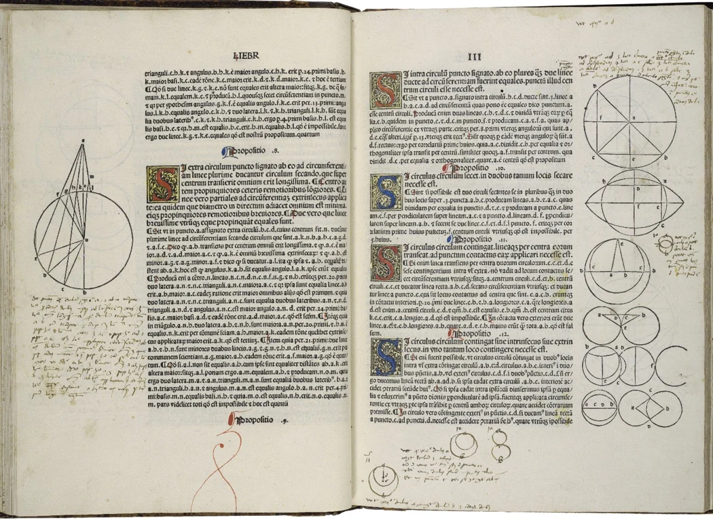
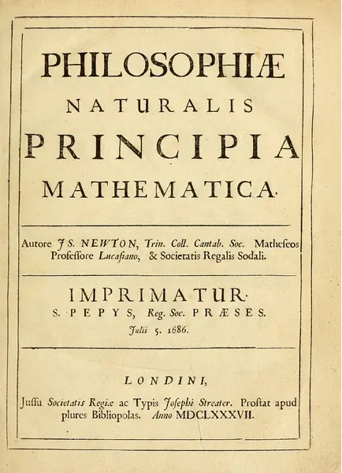

গণিত · গণিতের ইতিহাস
পশ্চিমা গণিতের বিবর্তন
বিজ্ঞান জিজ্ঞাসা
একই প্রশ্ন, ভিন্ন যুগের উত্তর
একটি জ্যামিতিক নিয়ম সত্য কেন? কোনো গ্রহ পরের মাসে কোথায় থাকবে? একটি অসীম প্রক্রিয়ার ফল কীভাবে নির্ভুলভাবে বলা যায়? এই প্রশ্নগুলোর উত্তর খুঁজতে ভূমধ্যসাগরীয় জগৎ ও ইউরোপের গণিতচর্চার ভাষা কয়েকবার বদলেছে। কখনো প্রমাণের আদর্শ এসেছে জ্যামিতি থেকে, কখনো নতুন পদ্ধতির চাহিদা এসেছে বাণিজ্য, নৌচালনা ও জ্যোতির্বিজ্ঞান থেকে। [১]
প্রাচীন ভূমধ্যসাগরে প্রমাণের ভাষা
গ্রিক ভাষায় রচিত ইউক্লিডের এলিমেন্টস, আনুমানিক খ্রিষ্টপূর্ব ৩০০ সালের সংকলন, সংজ্ঞা ও স্বীকার্য থেকে ধাপে ধাপে উপপাদ্যে পৌঁছানোর একটি প্রভাবশালী নমুনা। তারপরও প্রাচীন গণিতচর্চা ছিল বহুমুখী। আর্কিমিডিস ক্ষেত্রফল ও আয়তন নির্ণয়ে জ্যামিতিক সীমা ব্যবহার করতেন। তাঁর যুক্তির একটি ধারণা হলো, কোনো বক্ররেখার ভেতর ও বাইরে বসানো সহজ আকারের মাপ দিয়ে কাঙ্ক্ষিত ক্ষেত্রফলকে ক্রমে আটকে ফেলা। [১,২]


ভাষা বদলালে পদ্ধতিও বদলায়
মধ্যযুগে গ্রিক রচনার অনেকগুলো আরবিতে অনূদিত হয়। একই সময়ে আরবিভাষী পণ্ডিতেরা ভারতীয় গণনাপদ্ধতি নিয়ে কাজ করেন এবং নতুন অঙ্ক তৈরি করেন। আল-খোয়ারিজমির বীজগণিতে সমীকরণ সাজিয়ে সমাধানের নিয়ম তার উদাহরণ। দ্বাদশ শতক থেকে লাতিন অনুবাদ ইউরোপে এসব কাজের নাগাল বাড়ায়। ভূমধ্যসাগরীয় বাণিজ্যকেন্দ্রে শিক্ষা পাওয়া ফিবোনাচ্চির লিবার আবাচি (১২০২) হিন্দু–আরবি অঙ্কে মুদ্রা বদল, লাভের হিসাব ও অন্যান্য সমস্যা দেখায়। চলতি হিসাবের অভ্যাসের সঙ্গে প্রতিযোগিতা করে নতুন লিখনপদ্ধতি ধীরে ধীরে জায়গা করে নেয়। [১,৩,৪]
গতি আর পরিবর্তনকে অঙ্কে ধরা
স্থানাঙ্ক জ্যামিতি বক্ররেখাকে সমীকরণ দিয়ে বর্ণনা করার পথ খুলে দেয়। সপ্তদশ শতকে নিউটন ও লাইবনিজ নিজ নিজ পথে ক্যালকুলাসের পদ্ধতি গড়ে তোলেন। একটি বস্তুর অবস্থান সময়ের সঙ্গে বদলালে ডেরিভেটিভ বলে কোনো মুহূর্তে তা কত দ্রুত বদলাচ্ছে। ইন্টিগ্রাল দিয়ে আবার সময়ের ব্যবধানে বেগ থেকে মোট সরণ বের করা যায়। নিউটনের প্রিন্সিপিয়া (১৬৮৭) মূলত জ্যামিতিক যুক্তিতে লেখা হলেও গতি ও মহাকর্ষকে একই গাণিতিক কাঠামোয় আনার গুরুত্ব দেখায়। [১,৫]
স্বীকার্য ও প্রমাণকেই প্রশ্ন করা
ঊনবিংশ শতকে অ-ইউক্লিডীয় জ্যামিতি দেখায়, সমান্তরাল রেখা সম্পর্কে অন্য স্বীকার্য নিয়েও সামঞ্জস্যপূর্ণ জ্যামিতি গড়ে উঠতে পারে। বিশ্লেষণে সীমা ও অভিসরণের নির্ভুল সংজ্ঞা দিয়ে ক্যালকুলাসের ভিত্তি স্পষ্ট করা হয়। বিশ্ববিদ্যালয়, পেশাদার সমিতি ও গবেষণা সাময়িকী এসব ধারণা যাচাই ও ছড়িয়ে দেওয়ার নতুন পরিসর দেয়। ১৯০০ সালে হিলবার্ট যে সমস্যা-তালিকা উপস্থাপন করেছিলেন, তা গবেষণার দিকনির্দেশ তৈরিতে এই সংস্কৃতির একটি উদাহরণ। আজ পদার্থবিজ্ঞানের মডেল এবং বিমূর্ত কাঠামোর গবেষণায় সেই দুই অভ্যাসই সক্রিয়: বিশ্বকে সমীকরণে ধরা এবং সমীকরণের ভিত্তি পরীক্ষা করা। [১,৬]
